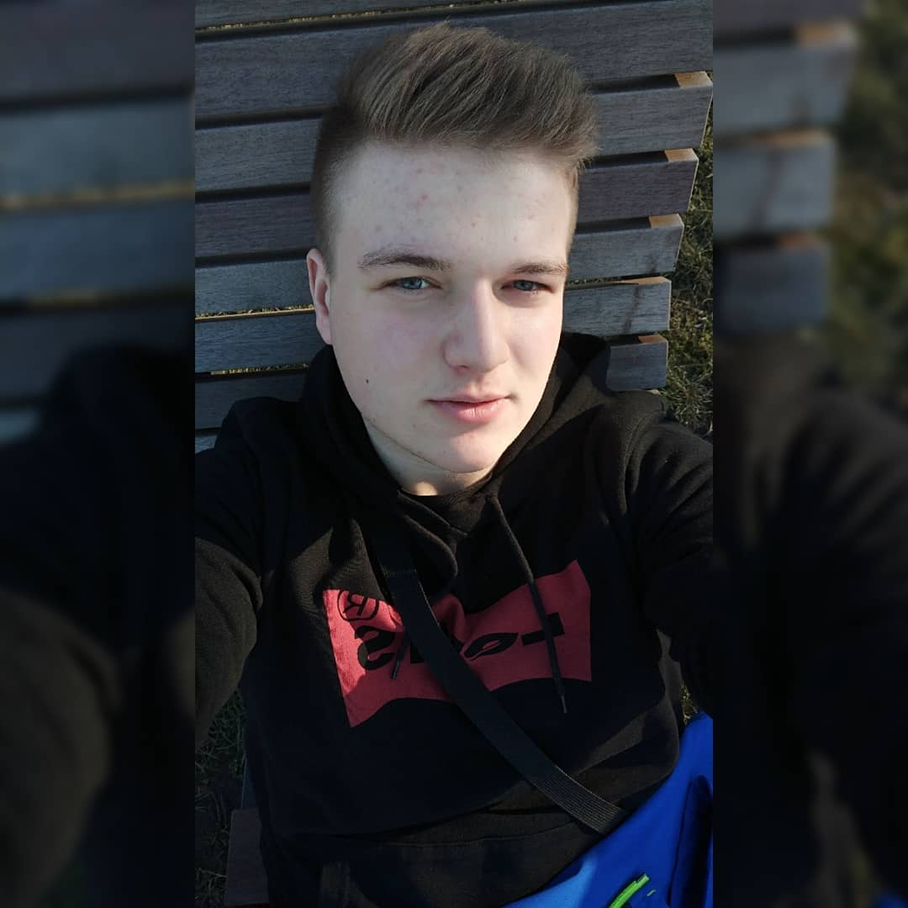

Nazywam się Paweł Irzyk, mam 22 lata, pochodzę z okolic Rzeszowa lecz obecnie mieszkam w Krakowie gdzie jestem studentem informatyki na trzecim roku na Politechnice Krakowskiej im. Tadeusza Kościuszki.
Obecnie poszukuję stażu w dziale IT, chciałbym podszkolić swoje umiejętności z programowania. Pasje do programowania odkryłem w czasach liceum i ciągle kształce się w tej dziedzine, największe obycie mam z językami Java i C++. Obecnie jestem w trakcie kursu z programowania frontendowego a efektem jest ta strona, która sam stworzyłem. W czasie wolnym spędzam czas na siłowni. Gram też półprofesjonalnie w siatkówkę w drużynie Recco, która obecnie występuje w III Lidze TKKF w Krakowie. Po prawej możesz ujrzeć zdjęcia, które pokazują mnie i moje pasje.
